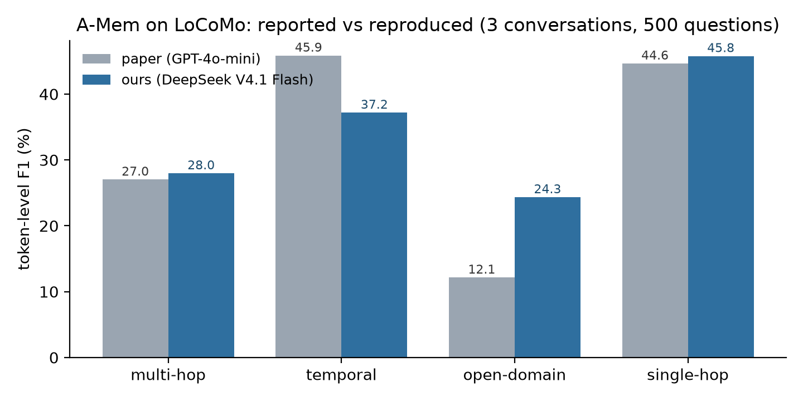
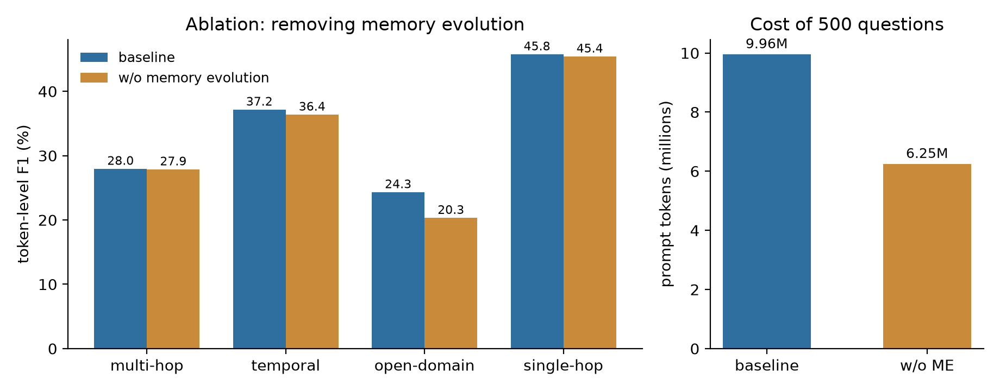

github.com/YUTING-FU-123/FTEC5660-IP2-amem-repro ·
Walkthrough: youtu.be/5JYdON59JTg (14:45, unlisted)Paper. A-Mem: Agentic Memory for LLM Agents (Xu, Liang, Mei, Gao, Tan, Zhang; NeurIPS 2025;
arXiv:2502.12110). The authors publish their own evaluation code at github.com/WujiangXu/A-mem,
described in the README as “specifically designed to reproduce the results presented in our paper”.
System. A-Mem gives an LLM agent a long-term memory built from Zettelkasten-style notes instead of flat embeddings. Adding one utterance triggers a chain of LLM calls: (i) note construction — generate keywords, tags and a contextual description; (ii) link generation — compare with the nearest notes and decide which links to create; (iii) memory evolution — rewrite the context and tags of neighbouring notes so the memory network keeps refining itself. Answering a question retrieves the top-k notes and asks the LLM to answer from them. This multi-step, tool-calling, self-modifying loop is what makes it an agentic system rather than a single prompt-response pipeline.
Target claim. Token-level F1 / BLEU-1 on the LoCoMo long-conversation QA benchmark, reported per question category. The paper's GPT-4o-mini row is our reference point: multi-hop 27.02, temporal 45.85, open-domain 12.14, single-hop 44.65, adversarial 50.03, and an average retrieved-context length of 2,520 tokens against 16,910 for full-context prompting.
Scope. LoCoMo has ten conversations. Following the assignment brief we reproduce a subset — three conversations (conv 0, 1, 8: 1,297 utterances, 500 questions) — and we keep the authors' evaluation script, metrics and prompts unmodified.
| Item | Value |
|---|---|
| Hardware | MacBook Air (Apple silicon), 8 GB RAM, CPU only — no GPU |
| Runtime | Python 3.12 venv; torch, sentence-transformers, nltk, rank-bm25, openai |
| Encoder | all-MiniLM-L6-v2 (as in the paper), fetched via an HF mirror |
| LLM | DeepSeek V4.1 Flash (deepseek-flash), OpenAI-compatible endpoint |
| Decoding | temperature 0.7 (memory ops and QA), 0.5 (category-5 answers); max_tokens 4096; thinking disabled |
| Data | data/locomo10.json shipped with the repository — no external download |
| Retrieval | k = 10 (repository default), memory scope = per conversation |
| Wall-clock | 35–50 min per conversation-arm, two arms in parallel |
| Cost | ≈ ¥2 per conversation-arm; 5,081 LLM calls and 10.3M prompt tokens for the 500-question baseline |
Model substitution. GPT-4o and GPT-4o-mini were not available to this account, so the LLM is a
controlled variable replaced with DeepSeek V4.1 Flash. Recorded settings: model deepseek-flash,
base URL https://api.deepseek.com/v1, no prompt or template changes. Results are therefore not
directly comparable to the paper; the tasks, the metric implementations and the evaluation script are
identical, the underlying model is not.
Two adaptations were necessary and are documented as such rather than hidden: max_tokens was
raised from 1000 to 4096 (DeepSeek counts reasoning tokens against the completion budget, so structured
answers were being truncated to empty strings), and thinking mode was disabled (default mode spent 8.8 s and
1,213 completion tokens per call versus 1.5 s and 219 with thinking off — and the paper's GPT-4o-mini
baseline is a non-reasoning, single-shot call pattern, so disabling it is also the closer match).
utils.calculate_metrics:
F1 over normalised token overlap, plus BLEU-1 with the standard brevity penalty. Aggregated per category
and overall, weighted by question count.| Category | n | Paper F1 | Ours F1 | Δ | Ours BLEU-1 |
|---|---|---|---|---|---|
| Multi-hop | 80 | 27.02 | 27.98 | +0.96 | 16.61 |
| Temporal | 96 | 45.85 | 37.18 | −8.67 | 31.96 |
| Open-domain | 26 | 12.14 | 24.34 | +12.20 | 20.41 |
| Single-hop | 187 | 44.65 | 45.78 | +1.13 | 39.66 |
| Adversarial | 111 | 50.03 | 73.86 | n/c | 73.14 |
| Overall | 500 | — | 46.40 | — | 40.93 |
What reproduces. The two “retrieve-and-answer” categories land within about one F1 point of the paper: multi-hop 27.98 vs 27.02 and single-hop 45.78 vs 44.65, i.e. the same effect size in both directions with a different model. Given that the LLM was swapped, a ±1 point agreement on 80 and 187 questions is a meaningful signal that the system, not the model, drives those numbers.
What does not reproduce. Temporal questions fall 8.7 points short. Inspecting individual results, the failure mode is date normalisation rather than retrieval: for “When did Jon lose his job as a banker?” the gold answer is 19 January, 2023 and the model answers Yesterday, 20 January 2023 — the right memory, the wrong day, and F1 collapses on the mismatched tokens. GPT-4o-mini presumably emits the canonical date string more often. This is a model-dependent artefact, not a defect of A-Mem's memory layer.
Where we are better. Open-domain F1 is 12 points above the paper. This is not a claim that our system is better: it tracks the context measurement below. The released code, at its default k = 10, feeds roughly 14,200 tokens of retrieved notes per question (13.3k / 14.2k / 15.1k across the three conversations), whereas the paper reports an average of 2,520. With 5.6× more context the answer model has far more material to hit an open-domain question — and, correspondingly, we pay 5.6× the token cost.
Adversarial is not comparable. The harness has two scoring modes for category 5: the default scores
against “Not mentioned in the conversation” (the factually correct response), while
--legacy_c5_reference reproduces the paper's protocol of scoring against the adversarial answer.
We used the default, which is why our 73.86 cannot be lined up with the paper's 50.03. This is a protocol
choice, not a capability difference, and it is exactly the kind of hidden assumption a reproduction study is
supposed to surface.

The change. One switch, --ablate_memory_evolution, disables exactly one of the four
steps: the third LLM call in process_memory, the one that rewrites the context and tags of
neighbouring notes. Note construction and link generation are untouched, so this is the paper's
w/o ME ablation rather than w/o LG & ME. Baseline and ablation write to separate
memory caches, so no state is shared between arms. The change is isolated (one call site), and measurable
(F1 per category, token counts, calls, wall-clock).
| Baseline | w/o ME | Δ | |
|---|---|---|---|
| Overall F1 | 46.40 | 46.42 | +0.02 |
| Multi-hop F1 | 27.98 | 27.89 | −0.09 |
| Temporal F1 | 37.18 | 36.41 | −0.77 |
| Open-domain F1 | 24.34 | 20.34 | −4.00 |
| Single-hop F1 | 45.78 | 45.44 | −0.34 |
| Adversarial F1 | 73.86 | 76.18 | +2.32 |
| LLM calls | 5,081 | 4,863 | −4.3% |
| Prompt tokens | 10.34 M | 6.52 M | −36.9% |
| Completion tokens | 0.414 M | 0.219 M | −47.1% |
| Retrieved context / question | 14.2k tok | 7.8k tok | −45% |
| Cost (measured) | ≈¥2.0 | ≈¥1.3 | −35% |

Interpretation. On our subset the evolution step buys nothing measurable in accuracy and costs 37% of the prompt budget. The paper reports the opposite direction and a large effect (multi-hop 27.02 → 21.35 when ME is removed, a 5.7-point drop); we measure 27.98 → 27.89. Two candidate explanations, both consistent with what we see: (i) evolution makes neighbouring notes longer and more verbose, and the extra text dilutes the signal in the answering prompt rather than sharpening it — the 82% larger context per question is directly visible in our measurement; (ii) a single conversation's memory is small (a few hundred notes), so there is little redundancy for evolution to consolidate, whereas the paper's effect may depend on longer-horizon memory. We cannot separate (i) from (ii) with three conversations, and we report the disagreement rather than tuning until it matches.
Run-to-run variance. Conv 1 was run twice. At seed 42 the baseline scored 46.23 and the ablation 51.35 (+5.1 for dropping evolution); at seed 43 the same two arms scored 47.49 and 48.30 (+0.8). The baseline itself moved 1.3 points between seeds and the ablation 3.1 points, so the apparent advantage of dropping evolution is of the same order as decoding noise. Pooling the two seeds leaves the ablation +2.97 ahead — still nowhere near the paper's −5.7 for removing it, and the sign is the opposite one. The stable part of the finding is the cost: promising 37% fewer prompt tokens for a difference we cannot distinguish from noise.
The one category where the ablation clearly hurts is open-domain (−4.0), the one where the paper's numbers are also furthest from ours; with n = 26 that difference is within noise (≈1.4 standard errors), so we do not build a story on it.
| Blocker | Symptom → resolution |
|---|---|
| HuggingFace unreachable | Encoder download hung in SYN_SENT; huggingface.co returns 000 from this network. Fixed with HF_ENDPOINT=https://hf-mirror.com, model cached once, then HF_HUB_OFFLINE=1 for every run. |
| NLTK bootstrap stalls | Import-time nltk.download sat on a blocked CDN for minutes. Pre-fetched punkt, punkt_tab, wordnet; later runs skip the lookup entirely. |
| 23% empty LLM outputs | At max_tokens=1000 DeepSeek's reasoning tokens consumed the whole budget and content came back empty (finish_reason=length); memories silently degraded to heuristic defaults. Raised to 4096 and added a truncation counter → zero failures in every reported run. |
| 6× slower and 5× costlier than expected | Reasoning mode: 8.8 s and 1,213 completion tokens for a prompt the answer needed 219 tokens for. Sent thinking={"type":"disabled"} → 1.5 s, 219 tokens, and a closer match to the GPT-4o-mini baseline. |
| Silent cache collision | The harness indexes memory caches as memory_cache_sample_<i>.pkl, so two different single-conversation files both resolved to sample 0: the conv_0 run finished in four minutes and answered from conv_1's memories. Detected from cached_samples=[0] and the implausible runtime. Cache keys now include a dataset + seed tag; the contaminated run was discarded and re-run (≈¥3 wasted). |
| BERTScore unavailable | bert-score needs a roberta checkpoint that cannot be fetched offline; the harness logs one error per question and continues. F1/BLEU-1, the reported metrics, are unaffected. |
What is reproducible. The memory layer's core behaviour transfers: with a completely different LLM, two of four comparable categories land within one F1 point of the paper, and the direction of every category is stable across the three conversations we ran. A-Mem's advantage over full-context prompting is real in our setting as well — 14k tokens per question instead of the 16.9k the paper quotes for stuffing the whole conversation.
What is not. (i) The reported context efficiency: we measure 5.6× more context per question than the paper's 2,520 tokens, at the repository's default k. (ii) Temporal performance, which is a date-normalisation artefact of the substitute model. (iii) The ablation: removing memory evolution does not cost accuracy here (Δ +0.02 overall) while saving 37% of prompt tokens, opposite to the paper's 5.7-point drop. Any one of these could be blamed on the model swap; together they suggest that the paper's efficiency and ablation numbers are more sensitive to the exact LLM and prompt version than the headline accuracy is.
Recommendations for future users. Measure your token cost before choosing a scale — a single
conversation is already 1,300–2,000 LLM calls and 1.6–4.2M prompt tokens. Turn thinking mode off when substituting a reasoning model, and set
max_tokens well above the expected answer length. Watch the cache keys if you evaluate subsets:
the harness indexes by position, not by content, and will silently reuse the wrong memories. If accuracy on
dates matters, normalise them before scoring.
All numbers in the report are weighted aggregates of the rows below; each row is one full run (memory construction + all questions), k = 10. The first six rows are seed 42; the last two repeat conv 1 with seed 43 to measure run-to-run variance.
| Run | Overall F1 | Multi-hop | Temporal | Open-dom. | Single-hop | Adversarial | Calls | Prompt tokens |
|---|---|---|---|---|---|---|---|---|
| conv 0 — baseline | 44.79 | 27.86 | 25.49 | 18.14 | 48.94 | 72.70 | 1,749 | 3.89 M |
| conv 0 — w/o ME | 43.14 | 26.88 | 27.61 | 15.87 | 44.76 | 71.58 | 1,647 | 2.44 M |
| conv 1 — baseline | 46.23 | 27.24 | 49.21 | — | 29.95 | 81.55 | 1,340 | 2.27 M |
| conv 1 — w/o ME | 51.35 | 40.91 | 55.02 | — | 38.56 | 75.60 | 1,309 | 1.59 M |
| conv 8 — baseline | 48.13 | 28.30 | 40.81 | 30.54 | 52.29 | 70.62 | 1,992 | 4.18 M |
| conv 8 — w/o ME | 47.10 | 24.90 | 31.61 | 24.81 | 50.25 | 81.92 | 1,907 | 2.49 M |
| conv 1 — baseline (seed 43) | 47.49 | 21.27 | 49.71 | — | 35.46 | 79.17 | 1,348 | 2.34 M |
| conv 1 — w/o ME (seed 43) | 48.30 | 40.66 | 42.91 | — | 38.51 | 75.60 | 1,311 | 1.68 M |
conv 1 contains no open-domain questions. Per-conversation variance is large (overall F1 43.1–51.4), which is why we report three conversations rather than one: the ablation difference (+0.02 overall) is far smaller than the between-conversation spread. Category-level noise is visible too: conv 1 multi-hop reads 27.2 / 40.9 (seed 42) and 21.3 / 40.7 (seed 43) on 11 questions, so only the aggregate over 80 multi-hop and 187 single-hop questions should be read as a reproduction result.
Artefacts: this report; the code, run scripts and the 13-slide presentation deck at
github.com/YUTING-FU-123/FTEC5660-IP2-amem-repro (REPRO.md, repro/,
report/AMem_Presentation_13slides.pptx); the raw per-question results as JSON; and the recorded
walkthrough, youtu.be/5JYdON59JTg (14:45, unlisted). Every number above is produced by repro/aggregate.py
from the JSON files in repro/out/; no number is copied from the paper except the “Paper” column.